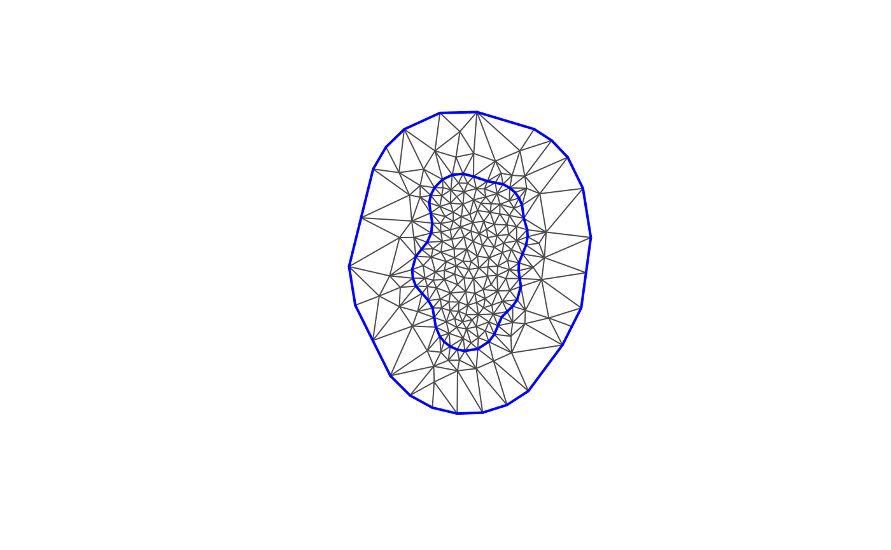

Construct finite element structure matrices
Arguments
- mesh_loc
numeric matrix; mesh vertex coordinates
- mesh_tv
3-column integer matrix with 0-based vertex indices for each triangle
- aniso
A
list(kappa, v). Which can be given per triangle or vertex. Calculates anisotropic structure matrices for an anisotropic operator \(\kappa^2-\nabla\cdot H \nabla\). Here \(\kappa>0,v=(v_1,v_2)\in\mathbb{R}^2\) and \(H=e^{|v|}\tilde{v}\tilde{v}^T+e^{-|v|}\tilde{v}_\perp\tilde{v}^T_\perp\)., where and \(\tilde{v}=|v| e^{i \alpha /2 }, \alpha := \arctan(v_2 /v_1)\).- options
list of triangulation options (
sphere_tolerance)
Examples
loc <- matrix(rnorm(20), 10, 2)
loc_sf <- sf::st_geometry(sf::st_as_sf(as.data.frame(loc), coords = 1:2))
loc_sp <- sf::as_Spatial(loc_sf)
boundary_sf <- fm_extensions(loc, c(1, 3))
mesh <- fm_mesh_2d_inla(boundary = boundary_sf, max.edge = c(0.5, 2))
plot(mesh)

kappa <- function(xi) {
return(sum(xi^2))
}
vec <- function(xi) {
return(c(xi[1] + 1, xi[2] - 2))
}
nodes <- mesh$loc
kappa_values <- apply(nodes, 1, kappa)
vec_values <- t(apply(nodes, 1, vec))
aniso=list(kappa_values,vec_values)
a<-fm_fem_aniso(mesh,aniso)